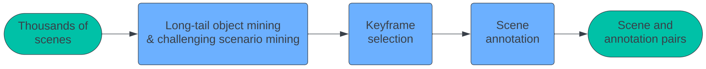
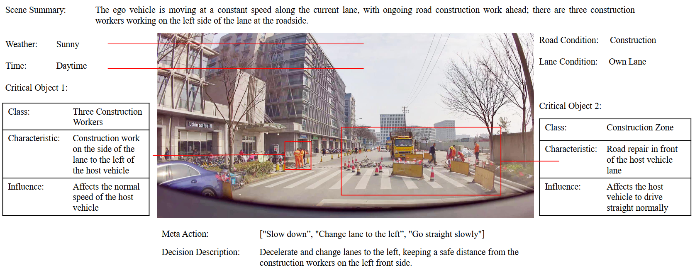

Xiaoyu Tian1*, Junru Gu1*, Bailin Li2*, Yicheng Liu1*, Yang Wang2, Zhiyong Zhao2, Kun Zhan2, Peng Jia2, Xianpeng Lang2, Hang Zhao1†
* Equal contribution. Listing order is random.
† Corresponding author.
Conference on Robot Learning (CoRL) 2024
A primary hurdle of autonomous driving in urban environments is understanding complex and long-tail scenarios, such as challenging road conditions and delicate human behaviors. We introduce DriveVLM, an autonomous driving system leveraging Vision-Language Models (VLMs) for enhanced scene understanding and planning capabilities. DriveVLM integrates a unique combination of reasoning modules for scene description, scene analysis, and hierarchical planning. Furthermore, recognizing the limitations of VLMs in spatial reasoning and heavy computational requirements, we propose DriveVLM-Dual, a hybrid system that synergizes the strengths of DriveVLM with the traditional autonomous driving pipeline. Experiments on both the nuScenes dataset and our SUP-AD dataset demonstrate the efficacy of DriveVLM and DriveVLM-Dual in handling complex and unpredictable driving conditions. Finally, we deploy the DriveVLM-Dual on a production vehicle, verifying it is effective in real-world autonomous driving environments.
DriveVLM accepts sequences of images as input and, through a reasoning-based Chain-of-Thought (CoT) mechanism, outputs hierarchical planning predictions. DriveVLM can optionally incorporate traditional 3D perception and trajectory planning modules to achieve spatial reasoning capability and real-time trajectory planning.
Data mining and annotation pipeline for building a scene understanding dataset:

The figure below illustrates a sample scenario with detailed annotations. We employ a group of annotators to perform the scene annotation, including scene description, scene analysis, and planning, except for waypoints, which can be auto-labeled from the vehicle’s IMU recordings.

@article{DriveVLM,
title={DriveVLM: The Convergence of Autonomous Driving and Large Vision-Language
Models},
author={Xiaoyu Tian and Junru Gu and Bailin Li and Yicheng Liu and Zhiyong Zhao and
Yang Wang and Kun Zhan and Peng Jia and Xianpeng Lang and Hang Zhao},
journal={arXiv preprint arXiv:2402.12289},
year={2024}
}